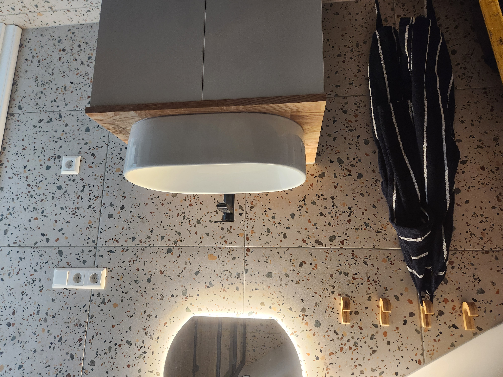
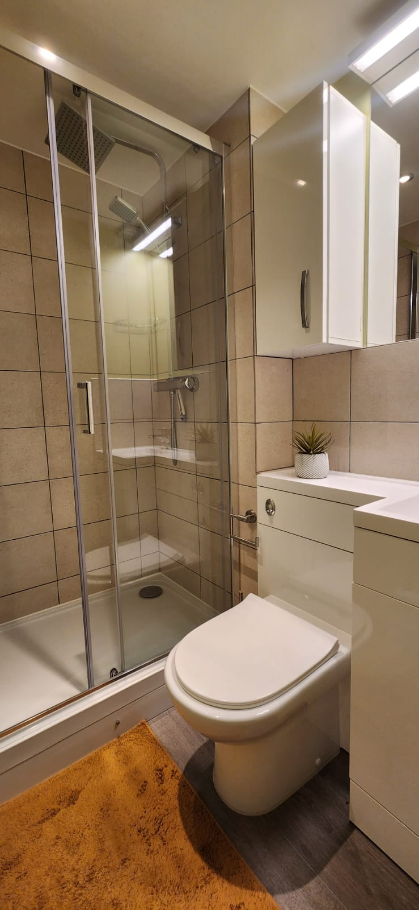
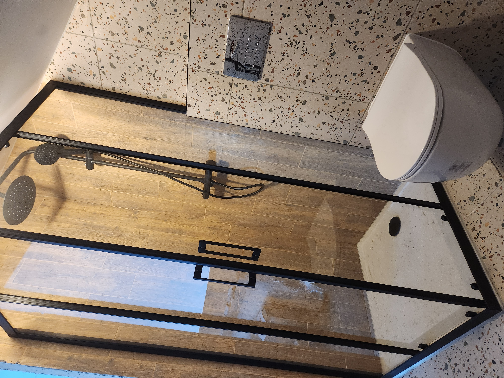
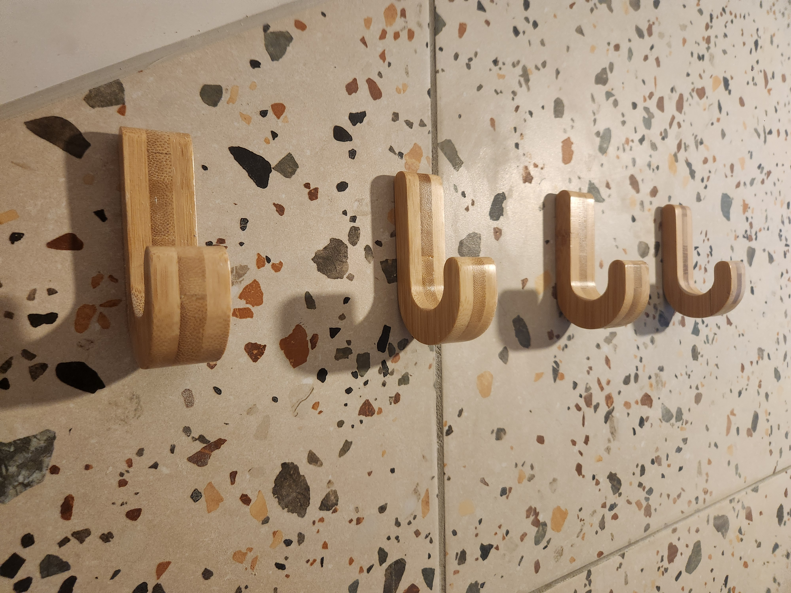
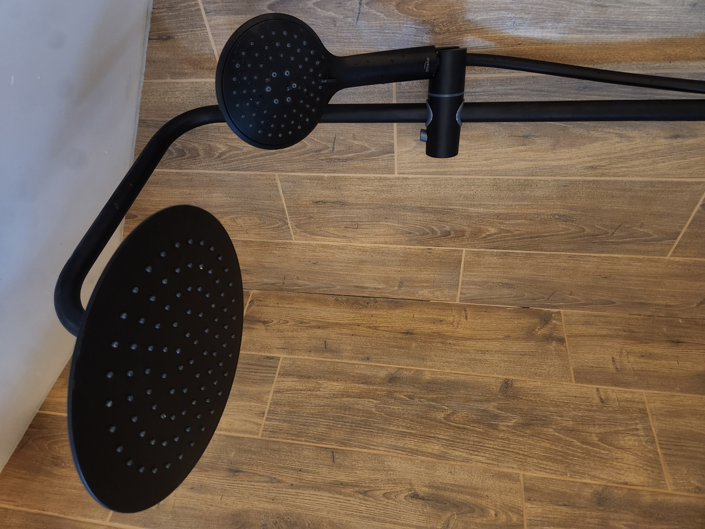
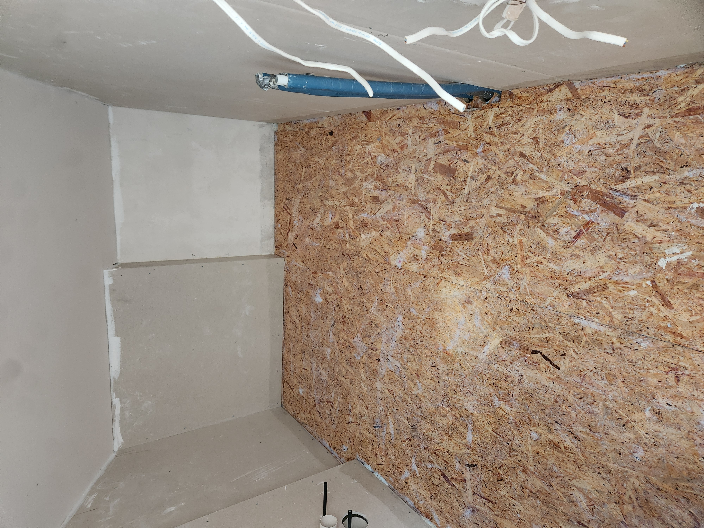

Vonios remontas
Demontavimas, hidroizoliacija, plytelės, dušo zonos, santechnikos taškai, baldų ir įrangos montavimas.
Būsto remontas be nereikalingo chaoso
Atliekame praktiškus remonto ir apdailos darbus nuo paruošimo iki užbaigimo. Prieš startą aiškiai sutariame darbų apimtį, eigą, medžiagas ir atsakomybes.
Pozicija
Leonamai.lt skirta žmonėms, kuriems reikia patikimo meistro ir aiškios remonto eigos. Padėsime įvertinti būklę, sudėlioti darbus pagal prioritetus ir rasti praktišką sprendimą pagal biudžetą.
Paslaugos
Demontavimas, hidroizoliacija, plytelės, dušo zonos, santechnikos taškai, baldų ir įrangos montavimas.
Sienų, grindų ir lubų paruošimas, gipskartonis, dažymas, grindų dangos, durys ir grindjuostės.
Elektros ir santechnikos taškai, sienų bei grindų apdaila, plytelės ir paruošimas baldų montavimui.
Tikslūs kampai, siūlės, nuolydžiai ir mazgai, nuo kurių priklauso ilgaamžiškas rezultatas.
Pertvaros, nišos, taisymai, paruošimai ir kiti darbai, kuriuos patogu sutvarkyti kartu su remontu.
Jeigu dar nežinote nuo ko pradėti, padėsime sudėlioti darbų seką, prioritetus ir realistišką biudžetą.
Sąmata be spėlionių
Tiksli remonto kaina priklauso nuo objekto būklės, pasirinktų medžiagų, darbų apimties ir paslėptų rizikų. Todėl prieš skaičiuojant kainą verta aiškiai atsakyti į kelis praktinius klausimus.
Pasitarti telefonuKodėl verta tartis
Atlikti darbai

Vonios remontas

Užbaigimas

Dušo zona

Detalės

Santechnika

Darbų eiga
Galerijoje rodome tik stipresnius kadrus. Dar geresnei viešai versijai verta papildomai nufotografuoti objektus horizontaliai, be įrankių, rankšluosčių, lipdukų ir atvirų laidų.
Procesas
DUK
Taip. Vonios yra vienas pagrindinių darbų: paruošimas, hidroizoliacija, plytelės, santechnikos taškai, dušo zona ir montavimas.
Iš nuotraukų galima duoti orientaciją. Tikslesnei sąmatai reikia aiškios darbų apimties arba apžiūros.
Galime padėti su kiekiais ir praktiškais pasirinkimais. Ar medžiagos įeina į kainą, sutariame prieš pradedant darbus.
Vilnius, Lentvaris, Trakai ir Vilniaus regionas. Dėl tolimesnių objektų galima tartis atskirai.
Kontaktai
Atsiųskite nuotraukas arba video, trumpą aprašymą ir vietą. Atsakysime, ką verta daryti pirmiausia ir kokių klausimų dar reikia tiksliai sąmatai.